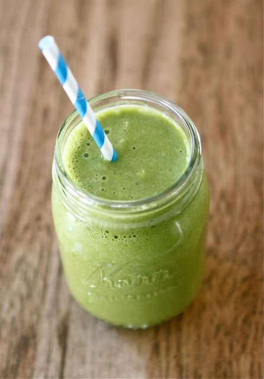

Smoothies

Here is a link to a good cabbage smoothie recipe: Cabbage Smoothie!
Some of my other favorite smoothie recipes are below. Enjoy!
Apple Berry
1 handful of spring mix greens
2 handfuls of spinach
2 cups of water
1 1⁄2 cups of frozen blueberries
1 banana, peeled
1 apple, cored and quartered
1 packet of Stevia
2 tablespoons of ground flax seeds
OPTIONAL: 1 scoop of protein powder
Place leafy greens and water into blender and blend until mixture has a green, juice-like consistency. Stop blender and add remaining ingredients. Blend until creamy.
Pineapple Spinach
2 cups of fresh spinach, packed
1 cup of pineapple chunks
2 cups of frozen peaches
2 bananas, peeled
1 1⁄2 packets of Stevia
2 cups of water
2 tablespoons of ground flax seeds
OPTIONAL: 1 scoop of protein powder
Place spinach and water into blender and blend until mixture has a green, juice-like consistency. Stop blender and add remaining ingredients. Blend until creamy.
Pineapple Berry
2 handfuls of spring mix greens
2 handfuls of spinach
1 banana, peeled
1 1⁄2 cups of pineapple chunks
1 1⁄2 cups of frozen mango chunks
1 cup of frozen mixed berries
3 packets of Stevia
2 cups of water
2 tablespoons of ground flax seeds
OPTIONAL: 1 scoop of protein powder
Place leafy greens and water into blender and blend until mixture has a green, juice-like consistency. Stop blender and add remaining ingredients. Blend until creamy.
Apple Mango
3 handfuls of spinach
2 cups of water
1 apple, cored, quartered
1 1⁄2 cups of mangoes
2 cups of frozen strawberries
1 packet of Stevia
2 tablespoons of ground flax seeds
OPTIONAL: 1 scoop of protein powder
Place spinach and water into blender and blend until mixture has a green, juice-like consistency. Stop blender and add remaining ingredients to blender. Blend until creamy.